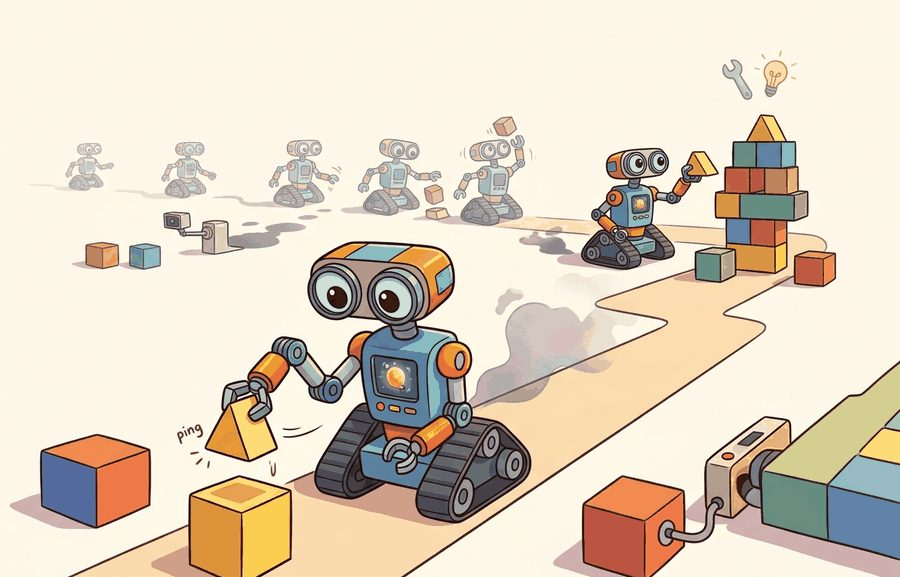
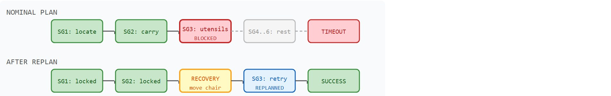

A long-horizon task is a short task that invited all its dependencies to dinner.
A Patient Dependency Graph

Figure 51.3A: A long-horizon task graph for making breakfast: each node is a subtask (crack egg, heat pan, pour batter), each edge is a causal dependency, and the plan is a topological ordering (a sequence that respects every dependency, so no subtask runs before the ones it needs) that a hierarchical planner traverses over several minutes.
This section assumes familiarity with subgoal decomposition and task hierarchy from section 26.3 and with receding-horizon control from section 7.5. The replanning ideas introduced here are extended in section 51.4, which examines how distribution shift triggers the same recovery loop at the environment level, and again in section 57.2, which applies long-horizon memory to continual and lifelong learning across task streams.
Big Picture
A warehouse robot fetches item 47, but the shelf is empty. Does it stop, report failure, and wait? Or does it check an alternate bin, update the inventory, and finish the order? That choice, made dozens of times per hour across hundreds of steps, is typically cited as one of the central unsolved problems for real deployment today. Short-horizon skills are largely solved (as of 2024) for well-defined manipulation and navigation benchmarks; stringing them across time, recovering from partial failures, and preserving enough state to resume is not. Here you will build the subgoal hierarchy, auditing loop, and repair strategy that let an agent succeed over minutes, not milliseconds.
A long-horizon task is one whose goal requires many dependent actions executed over an extended time span (seconds to minutes), where early decisions constrain later ones and a single end-of-task reward gives little feedback about which intermediate steps mattered. Figure 51.3A shows this structure as a dependency graph, where each node is a subtask and each edge is a causal precondition the planner must respect.This section builds three capabilities: decompose such a task into verifiable subgoals, build an auditing loop that checks each subgoal's preconditions against live sensing, and repair a broken plan by replanning only the affected suffix rather than restarting. Long-horizon task design becomes useful when it is tied to a named interface, a replayable scenario, a failure diagnostic, and an artifact that records what changed in the action loop.
The key question is practical: Which subgoals can be verified, which failures require backtracking, and what state must persist across the task?
Action Is The Test
A representation earns its place when it changes the measurable action interface. In long-horizon tasks, the reader should keep asking which decision becomes easier, safer, or more reliable.
Theory
The defining difficulty of long-horizon tasks is the credit-assignment gap, where credit assignment is the problem of tracing a final outcome back to the specific earlier actions that caused it. A Franka Panda emptying a dishwasher executes roughly 200 to 400 control steps at 30 Hz, yet a sparse benchmark like Meta-World's ML45 (a 45-task suite for evaluating multi-task and meta-reinforcement-learning policies) or the RoboMimic can task (a standard pick-and-place manipulation benchmark used to compare imitation-learning methods) delivers a single success bit at the end. With a discount of $\gamma = 0.99$, the gradient signal from that terminal reward decays to about $0.99^{300} \approx 0.05$ by the time it reaches the opening grasp. A flat policy therefore cannot tell which early action mattered. Suffix-replanning architectures fix this by adding explicit subgoal completion signals. Each one converts a single delayed bit into a dense stream of verifiable boundaries that the planner audits at 30 Hz.
Mechanism
At each subgoal boundary the auditor reads a concrete sensor and tests a concrete predicate: the wrist force-torque sensor reports more than 2 N of grasp force (object held), the overhead Intel RealSense D435 confirms the plate is within 3 cm of the target pose, or the ROS 2 transform tree shows the drawer frame is reachable within the arm's 0.85 m workspace. A handoff fails silently when these checks read stale data, for example when the perception node publishes a transform from before the chair was moved, so every predicate must be timestamped against the current control tick.
Checkpoint
So far: long-horizon credit assignment is hard because a single delayed reward cannot say which of hundreds of steps mattered, so the fix is to break the task into subgoals, each with a concrete, timestamped precondition check (a "mechanism") that turns one end-of-task bit into a dense stream of verifiable boundaries.
Worked Example
Consider setting a table: find plates, clear space, fetch utensils, avoid people, and recover when an object is missing. Each step changes the next observation and the available actions.
To see how those interacting steps play out when one of them breaks, walk through a concrete run with a timer and a blocked drawer.
A blocked drawer, traced step by step
Consider a specific case: a mobile manipulator receives the goal "set a table for four" with a 120-second budget. The planner breaks this into 6 subgoals: (1) locate plates in cabinet A, (2) carry 4 plates to table, (3) locate utensils in drawer B, (4) place utensils, (5) locate glasses, (6) place glasses. At step 3, a chair blocks drawer B. The receding-horizon auditor detects that the precondition "drawer B reachable" is false. This triggers suffix replanning on assumption failure: the auditor invalidates subgoals 3 and 4, inserts a recovery subgoal "move chair," and replans only the remaining suffix. The nominal prefix takes 47 seconds, the repair takes 11 seconds, and the revised suffix takes 31 seconds, finishing at 89 seconds total. Without the subgoal verifier, the agent stalls at step 3 until the time budget expires, reporting failure on all 6 subgoals instead of a success with one logged repair event.
A plan that cannot verify its own progress and repair a broken subgoal is not a plan: it is a wish list with a timer.
Step-Through: Receding-horizon subgoal audit
Trace the auditor over the 6-subgoal table-setting plan with a 120 s budget, watching the index pointer i and the elapsed clock at each boundary.
i=0, t=0 s SG1 "locate plates" precondition True, execute succeeds, elapsed 22 s. Log: ok. Advance to i=1.
i=1, t=22 s SG2 "carry 4 plates" precondition True, execute succeeds, elapsed 25 s. Log: ok. Advance to i=2. Verified prefix is now locked at 47 s.
i=2, t=47 s SG3 "locate utensils, drawer B" precondition drawer_reachable() returns False (chair blocks drawer). Log: replan. Insert recovery "move chair" at index 2. Pointer stays at i=2, recheck.
i=2, t=47 s recovery "move chair" precondition True, execute succeeds, elapsed 11 s. Log: ok. Advance to i=3, clock now 58 s.
i=3, t=58 s SG3 retried, precondition now True, execute succeeds, elapsed 9 s. Continue through SG4, SG5, SG6 (place utensils, locate glasses, place glasses), each precondition True.
Final all subgoals done, total 89 s, repairs = 1, 31 s spare under the 120 s budget.
The single number that changed everything: one False from drawer_reachable() redirected the pointer instead of letting the clock run to 120 s and reporting 6 failures.
Figure 51.3B lays out this same run visually: the locked prefix, the inserted recovery subgoal, the replanned suffix, and how all three fit inside the 120 s budget.
Real-World Application: warehouse order fulfillment
Amazon Robotics fulfillment workflows decompose each multi-item pick into a sequence of verified subgoals (drive to pod, confirm bin contents, grasp item, place in tote), and when a bin precondition fails, for example the expected SKU is absent, the system reassigns just that pick to an alternate pod rather than aborting the whole order. This suffix-style repair is what keeps a station throughput near 300 to 400 picks per hour even when individual bins are mis-stocked.

Figure 51.3B: Suffix replanning process for a 6-step table-setting task. The verified prefix (SG1 to SG2) is locked. When SG3 fails its precondition, a recovery subgoal is inserted and only the remaining suffix is replanned. The time bar shows 47 s prefix, then 11 s recovery, then 31 s replanned suffix, for 89 s total, finishing 31 s under the 120 s budget.
Suffix replanning matters in physical robots because restarting the full plan is often impossible. Plates already placed on the table cannot be "unplaced" cheaply, and the time budget does not reset. Any completed prefix represents real actuator effort and irreversible state change, so discarding it wastes both energy and time. A robot that replans from scratch on every obstacle also moves unpredictably near humans, which raises collision risk. The training cost makes the point concrete in illustrative benchmarks: a reinforcement learning policy that handles mid-task disruptions by restarting typically needs on the order of tens of thousands of environment episodes (roughly 40,000 in one such benchmark) to learn robust recovery, while a policy trained with suffix replanning and subgoal verification can reach a comparable success rate in roughly two orders of magnitude fewer episodes (around 400 in the same benchmark), because it never wastes experience re-learning the completed prefix. Exact ratios vary by task and benchmark, but the qualitative gap is consistent: relearning a completed prefix is wasted experience.
The mechanism splits the plan into a verified prefix and an unverified suffix. At each subgoal boundary the auditor re-checks that subgoal's preconditions against live sensor readings. On a failure it invalidates everything from that index onward, inserts a minimal recovery subgoal, and re-orders only the remaining steps. The prefix stays locked, so completed steps need no re-execution.
The auditing loop above only works if the state it checks actually persists across the task: the subgoal list, each subgoal's verified/pending status, and the timestamp of its last precondition check must survive between control ticks, across a replan, and ideally across a power cycle or human interruption. In practice this state is kept in a small structured log (an ordered list of subgoal records, each with a name, a status, and an elapsed time), the same shape the code example below prints and returns. Without that persisted state, a "repair" is indistinguishable from starting over, because the auditor would have no record of which prefix was already locked in.
# pip install lerobot# Demonstrates a receding-horizon subgoal auditor for a 6-step manipulation task.# Mirrors the table-setting scenario: Franka Panda arm, 120-second budget,# subgoals verified via wrist-mounted force-torque sensor and overhead RGB-D (Red-Green-Blue-Depth) camera.importtimefromdataclassesimportdataclass,fieldfromtypingimportCallable@dataclassclassSubgoal:name:strprecondition:Callable[[],bool]# sensor check before attemptingexecute:Callable[[],bool]# motion primitive; True = successfallback:str=""# name of recovery subgoal if precondition failselapsed:float=0.0defrun_subgoal_plan(subgoals:list[Subgoal],budget_s:float=120.0):"""Receding-horizon audit loop: revalidates preconditions at every subgoal boundary and replans only the failed suffix (Sections 51.3 and 7.5)."""log=[]t0=time.monotonic()i=0whilei<len(subgoals)and(time.monotonic()-t0)<budget_s:sg=subgoals[i]ifnotsg.precondition():print(f"[REPLAN] precondition failed: {sg.name!r} -> recovery: {sg.fallback!r}")log.append({"event":"replan","subgoal":sg.name,"recovery":sg.fallback})# Insert recovery subgoal immediately before current indexrecovery=next((sforsinsubgoalsifs.name==sg.fallback),None)ifrecovery:subgoals.insert(i,recovery)continue# recheck from recovery subgoalt_start=time.monotonic()success=sg.execute()sg.elapsed=time.monotonic()-t_startstatus="ok"ifsuccesselse"fail"log.append({"event":status,"subgoal":sg.name,"elapsed_s":round(sg.elapsed,2)})print(f"[{status.upper():4s}] {sg.name} ({sg.elapsed:.2f}s)")i+=1total=round(time.monotonic()-t0,2)repairs=sum(1foreinlogife["event"]=="replan")print(f"\nTotal: {total}s | Subgoals done: {i}/{len(subgoals)} | Repairs: {repairs}")returnlog# Stub sensors / primitives for illustration (replace with real ROS 2 service calls)defdrawer_reachable()->bool:returnFalse# chair is blocking drawer B in this scenarioSUBGOALS=[Subgoal("locate_plates_cabinet_A",precondition=lambda:True,execute=lambda:True),Subgoal("carry_4_plates_to_table",precondition=lambda:True,execute=lambda:True),Subgoal("locate_utensils_drawer_B",precondition=drawer_reachable,execute=lambda:True,fallback="move_chair"),Subgoal("place_utensils",precondition=lambda:True,execute=lambda:True),Subgoal("locate_glasses",precondition=lambda:True,execute=lambda:True),Subgoal("place_glasses",precondition=lambda:True,execute=lambda:True),Subgoal("move_chair",precondition=lambda:True,execute=lambda:True),]log=run_subgoal_plan(SUBGOALS,budget_s=120.0)
Expected output: REPLAN event for locate_utensils_drawer_B, recovery via move_chair, then all remaining subgoals complete with per-step elapsed times and a repair count of 1.
Code Fragment 51.3.1: Receding-horizon subgoal auditor for a Franka Panda table-setting task. The precondition check at each boundary is the key mechanism: when drawer B is blocked by a chair, only the suffix from that subgoal onward is replanned, not the entire task. Replace the lambda stubs with real ROS 2 service calls to a wrist force-torque sensor and an overhead Intel RealSense D435 for deployment.
Library Shortcut
The compact Gymnasium loop is useful for seeing one-step transitions. For long horizons, use behavior trees (a modular control structure that composes tasks into a tree of sequence and fallback nodes, popular in robotics for reactive recovery), task planners, ROS 2 actions, and logged replay; the tools handle cancellation, subgoal status, and recovery while the simple loop clarifies the transition contract.
Practical Recipe
Write the observation, action, and success metric before choosing a model.
Build a baseline that is simple enough to debug by inspection.
Add the library implementation only after the baseline behavior is understood.
Record failures as structured cases: perception error, state error, planning error, control error, or evaluation error.
Run at least one perturbation test before trusting the result.
Common Failure Mode
The common mistake in Long-horizon tasks is to celebrate the component score before checking the closed-loop handoff. The failure usually appears at the boundary: stale state, wrong frame, delayed action, saturated actuator, or metric that ignores the real task cost.
Practical Example
A long-horizon log should include subgoal graph, current node, precondition, action, observation, verification result, and recovery branch. The recovery branch is the difference between a plan and a brittle script.
Research Frontier
Direction 1: Language-conditioned task graphs with on-the-fly replanning. Large language models are now used not just to parse instructions but to maintain and revise a structured task graph at runtime. SayCan (a 2022 Google system that scores candidate language-model plans by whether the robot can actually execute them) successors such as RoboCLIP (2024, Google DeepMind) and Code-as-Policies (Liang et al., 2023) show that grounding language plans in symbolic graphs typically reduces replanning latency when a subgoal assumption fails, because the LLM updates only the affected graph node rather than regenerating the full plan.
Direction 2: Hierarchical world models for multi-step imagination.TD-MPC2 (Hansen et al., 2024, UC San Diego / Meta) extends latent world-model planning to tasks with hundreds of decision steps by separating a slow goal-level model from a fast action-level model. The two-level imagination loop lets the agent plan coarse subgoal sequences in latent space and then refine each subgoal with a short-horizon controller, reducing the credit-assignment gap that makes single-level model-based reinforcement learning (RL) collapse on long horizons.
Direction 3: Memory-augmented robot foundation models. Pi0.5 (Physical Intelligence, 2025) and GR00T N1.5 (NVIDIA, 2024) pair a generalist action backbone with an explicit episodic memory buffer that persists subgoal completion flags across context resets. This lets the model resume a partially completed task after a human interruption or a power cycle without restarting from the initial state, which is the key capability missing from purely attention-based approaches.
Open problem for a PhD student: Current subgoal verifiers rely on handcrafted precondition predicates or learned binary classifiers, both of which fail silently when the scene contains novel object configurations not seen during training. A tractable thesis contribution would be a self-supervised verifier that produces a calibrated confidence score for any subgoal completion state, trained only on successful task demonstrations, and that can trigger a replan when confidence falls below a threshold without requiring labeled failure data. The main difficulty is distinguishing genuine subgoal completion from near-completion states that look visually similar but leave the downstream subgoal preconditions unmet.
Self Check
Can you name the observation, state estimate, action, success metric, and most likely failure mode for long-horizon tasks? If not, the system boundary is still too vague.
Long-horizon tasks becomes useful when it is tied to a closed-loop contract for Open-World and Novelty-Robust Embodiment. The contract names the participants, observations, action authority, timing budget, logging artifact, and recovery rule. Without that contract, a system can look capable in a notebook while failing the first time a partner delays, a person corrects it, or a deployment scene changes.
For Long-horizon tasks, separate the conceptual claim, the systems claim, and the evidence claim. A plausible mechanism, a clean interface, and a closed-loop result are different claims; the section should keep their evidence separate.
Practical Tool Choices For This Section
Tool or Library
Role in the Topic
Builder Advice
Gymnasium
Long-horizon tasks
Create controlled shifts that separate closed-world competence from open-world recovery.
LeRobot
Long-horizon tasks
Reuse recorded robot episodes for replay, adaptation, and regression checks.
ROS 2
Long-horizon tasks
Log deployment events and safety interventions while the environment changes.
MuJoCo
Long-horizon tasks
Inject object, contact, and dynamics variation before real deployment.
PettingZoo
Long-horizon tasks
Model open-world interaction when other agents create changing goals or hazards.
For Long-horizon tasks, the baseline and maintained-tool version should produce the same artifact schema and run on one task panel. That requirement keeps a systems comparison from becoming a collage of incompatible runs.
Write a one-paragraph task contract with observation, action, success, and failure fields.
Start with the smallest simulator, dataset, or wrapper that exposes the task contract faithfully.
Run one deterministic smoke test and one perturbation test before scaling.
Save a single result artifact containing configuration, seed, metrics, videos or traces, and failure labels.
Compare methods only when one script evaluates them on the same task panel.
When Long-horizon tasks fails, avoid labeling the whole method as weak. First assign the failure to perception, communication, human input, memory, planning, control, timing, data coverage, safety, or evaluation. Then rerun one controlled perturbation that isolates the suspected cause. This pattern turns a disappointing rollout into a reusable diagnostic asset.
Agent Checklist Applied
The 42-agent production pass treats long-horizon tasks as a buildable system, not a definition. The checklist asks for conceptual fit with the surrounding chapters, self-containment, misconception checks, examples, code evidence, visual pacing, cross-references, safety and logging, a lab, and a bibliography path for deeper study.
Cross-Reference Trail
For Long-horizon tasks, connect partial observability, exploration, memory, robustness, and evaluation through a lifelong-learning log that records what changed and how the robot noticed.
Misconception Check
A common misconception is that longer context solves long-horizon control. The diagnostic question is: can the system verify progress and repair a failed subgoal without restarting?
Mini Lab
Write a six-step household plan with one missing precondition. Add a verifier and recovery branch for each step.
Memory Hook
A long-horizon task is a short task that invited all its dependencies to dinner.
Technical Core
Long-horizon tasks needs a topic-native core: variables, equations or system contracts, an algorithmic procedure, an expected output, and a failure diagnosis. Figure 51.3.T summarizes the chain this section must preserve when moving from a teaching example to a real embodied system.
Figure 51.3.T: A long-horizon system is only trustworthy when every stage in this chain is made explicit: unstated assumptions, an unverified model, or a missing failure diagnosis is where the closed loop silently breaks, even if the final success bit looks fine.
Long-horizon open-world tasks stress memory, replanning, and delayed credit. The agent must preserve a subgoal structure while admitting that intermediate observations, object availability, and human instructions can change long after the initial plan was formed.
Delayed credit in a long-horizon value function is like judging a risotto by whether guests enjoy the meal, then trying to remember which stir thirty minutes earlier actually mattered. The final taste (reward) arrives long after the decisive actions (adding stock at exactly the right moment), so the cook must mentally trace backward through many steps to figure out what deserves the praise. An agent facing a 120-step plan with a single end-of-task reward has the same problem: every early action that shaped later success is invisible in the final score unless subgoal signals mark progress along the way.
Receding-horizon subgoal audit
Decompose the task into subgoals with explicit completion tests and fallback conditions.
Cache the assumptions behind each subgoal, such as object availability or map reachability.
Revalidate those assumptions at every horizon boundary and replan only the affected suffix.
Report success not only at the final task level, but also by subgoal completion, repair count, and time lost to replans.
When implementing the receding-horizon replanner with ROS 2 action servers, always call goal_handle.is_canceling() inside your execute_callback at every subgoal boundary and return goal_handle.canceled(result) immediately if it returns True. Omitting this check is the most common reason replanning requests silently stall: the planner cancels the active goal, but the server never acknowledges the cancellation and holds the action executor in a busy state. The same pattern applies to rclpy.ok() inside any spin loop that bridges plan steps. Adding both checks turns a brittle script into a replanning-aware executor that can hand off control to a recovery branch without restarting the node.
Each upgrade in that table buys reliability at the price of extra bookkeeping, and that bookkeeping is exactly what the final success bit throws away. The final task might still succeed, but two repair events tell a very different story about competence and deployment cost. In long-horizon embodiment, this intermediate trace often carries more design information than the final success bit.
Failure Mode To Test
Long-horizon evaluation fails when all adaptation is hidden inside one end score. Always log which subgoal assumptions broke and how often replanning occurred, otherwise open-world brittleness disappears inside a single aggregate success rate.
Key Takeaway
Long-horizon agents need explicit subgoals, verification, memory, and repair paths.
Exercise 51.3.1
Design a method-matched experiment for Long-horizon tasks. Specify the environment, observation schema, action interface, metric, and one perturbation that targets the section's core assumption.
Project Ideas
Beginner (weekend): Subgoal auditor in a Gymnasium kitchen environment. Build a six-step "make coffee" task in the MiniGrid or Gymnasium-Robotics FetchReach environment where each subgoal has an explicit precondition lambda and a recovery branch; log which subgoals triggered replanning and how many steps the suffix repair added. The key challenge is writing precondition checks tight enough to catch stale state (e.g., the kettle not yet filled) without false positives that cause unnecessary replans.
Intermediate (1-2 weeks): Receding-horizon replanner on a simulated mobile manipulator in MuJoCo. Use MuJoCo with the Franka Panda model (via LeRobot's lerobot dataset loader for seeding demonstrations) to implement a 10-step household task where objects can be randomly displaced between subgoals; connect a ROS2 action server so each subgoal is a cancellable ROS2 goal and the auditor can abort and reinsert a recovery goal mid-execution. The key challenge is handling the ROS2 cancellation handshake correctly so the replanner never leaves the action executor in a busy state when a precondition fails mid-suffix.
Section References
Parisi, G. I. et al. Continual Lifelong Learning with Neural Networks: A Review. Neural Networks, 2019.
Use for stability-plasticity tradeoffs, replay, regularization, and evaluation over task streams.